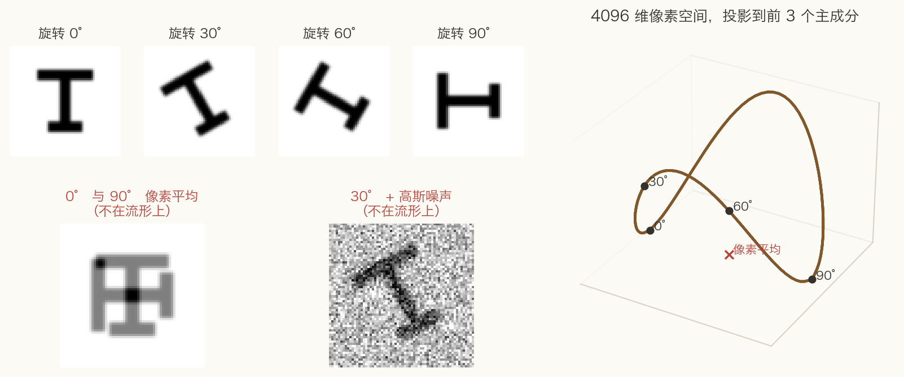
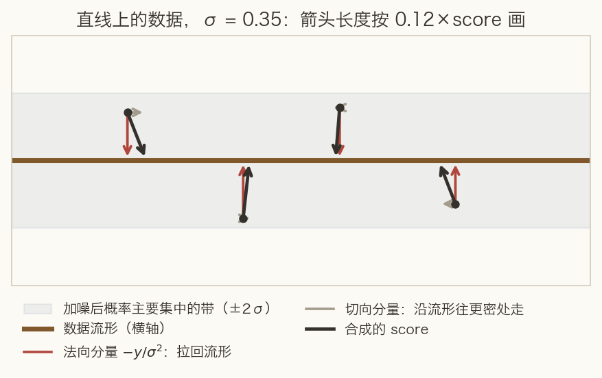
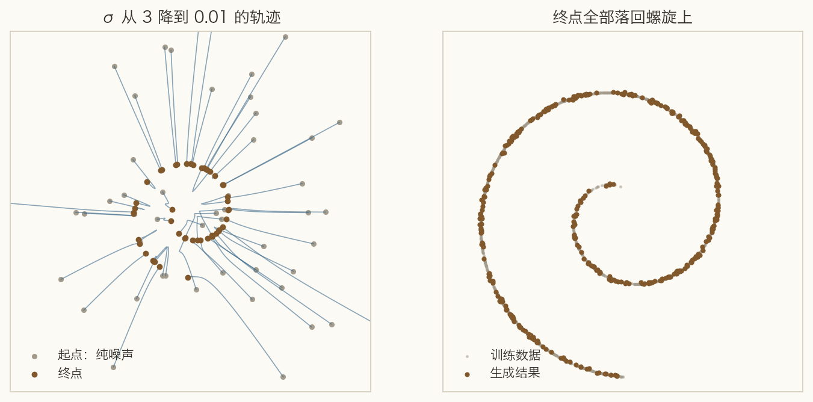
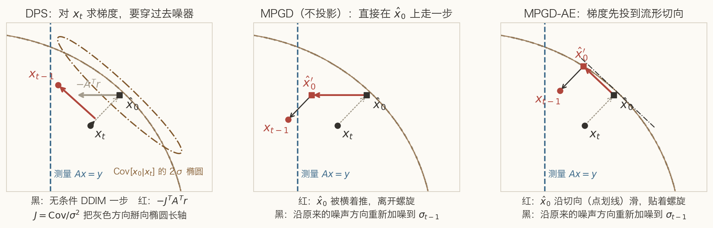
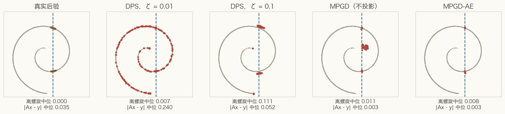

扩散模型里的「流形」：数据为什么挤在一条细线上，score 为什么指回去
读扩散模型的论文，「数据流形」「离开流形」「把样本拉回流形」这类说法几乎每篇都有。有人叫它「空间流形」，指的是同一件事：真实数据在高维空间里只占一块很薄的低维区域。本文用几张二维/三维小图把这个概念和扩散模型的训练、采样、逆问题串起来。
一句话版本：
加噪把这块薄区域摊厚；网络学到的 score 在每个噪声尺度上告诉你「往哪走更像数据」；噪声小的时候，这个方向主要垂直于流形、指回流形。采样就是从很厚走到很薄，一步步落回流形。
1. 流形是什么：维度很多，有效方向很少
一张 64×64 的灰度图是 4096 维空间里的一个点。但「看起来像真实图片」的点，只占这个空间里极小的一部分。
下面这个例子把问题压到最简单：同一个字形，只做旋转。180 张图，每张都是 4096 维向量，但它们只由**一个参数（角度）**决定。

- 左上：转动角度，图片沿着一条曲线连续移动。这就是「沿流形走」。
- 右侧：把 180 张图用 PCA 投影到前 3 个主成分（约占总方差 69%），它们连成一条闭合曲线。4096 维的空间里，数据只住在一条一维的线上。
- 左下：0° 和 90° 两张图的像素平均，是一个「叠影」，任何角度都转不出来，它落在曲线外面（红叉）。加了高斯噪声的图同样不在曲线上。
这就是流形假设（manifold hypothesis）：真实数据集中在高维空间中的低维结构附近。人脸、MRI 切片、自然图像都是这样，只是它们的「内在维度」远大于 1，形状也复杂得多。它是一个好用的建模假设，不是说所有图像都严格落在一张光滑曲面上。
两条直接推论：
- 在像素空间里做线性操作（平均、插值、加噪），通常会离开流形。
- 如果数据严格在低维流形上，它在整个空间里没有通常意义的概率密度。 密度没有定义，
也没有定义。Song & Ermon（NCSN, NeurIPS 2019）正是用这一点解释为什么直接对干净数据做 score matching 会失败。
2. 为什么要加噪：把细线摊成厚带
扩散模型的前向过程是

：数据只在线上，线外密度为零，线上密度在二维里是无穷大。 ：细线变成一条有厚度的带，带内每个点都有正常的、光滑的密度。 ：结构几乎看不出来，接近一团高斯。
加噪带来两个好处：
- 密度和 score 有了定义：
处处光滑，score 可以学。 - 远离数据的地方也有训练信号：score matching 的损失按
加权，低密度区的误差几乎不被惩罚。大噪声把样本撒到这些区域，采样起点（纯噪声）附近的 score 才学得准。这是 Yang Song 博客里讲的核心动机。
只用一个噪声尺度不够：小噪声信息保真但覆盖不到远处，大噪声覆盖广但把结构抹掉了。所以扩散模型同时学一整串噪声尺度。
3. score 和去噪器：几何上在做什么
3.1 Tweedie 公式：score = 「去噪方向」
对加性高斯噪声有一个精确关系：
左边是「看到带噪的
下图里的箭头从每个网格点

：箭头几乎都落在最近的那段螺旋上。去噪 ≈ 投影到流形。 ：一个点可能来自相邻的两圈螺旋，后验平均落在两圈之间，箭头开始「犹豫」。 ：所有点都分不清来源，箭头都指向数据整体均值附近。
注意中间和右边：后验平均本身可以不在流形上。这也是为什么一步去噪会糊、而扩散要一步步走。
3.2 小噪声下 score 主要垂直于流形
把流形换成最简单的直线（横轴），数据沿横轴服从标准正态。加噪后，点

法向分量带
弯曲的流形在局部也是这样。Stanczuk 等（ICML 2024）证明：噪声趋于零时，score 指向流形，扩散模型在低噪声下近似了流形的法丛（normal bundle）；数一数 score 张成多少个方向，就能估出流形的内在维度。
4. 反向采样：从厚到薄，落回流形
反向过程从大

400 个起点全部落回螺旋，终点到最近训练点距离的中位数约 0.008（螺旋半径约 1.9）。轨迹的形状对应第 3 节的三个阶段：先朝整体均值收拢，再挑选落在哪一圈，最后沿法向贴上流形。
Permenter & Yuan（ICML 2024）把这个过程解释成对流形的近似投影：去噪器近似「到数据集距离函数」的平滑梯度，采样就是逐步减小到数据集的距离，平滑程度由
有一点要说清楚：图里用的是训练集的精确经验 score，所以生成结果几乎就是训练点本身，这是「记忆」而不是「泛化」。真实网络学不到这么精确的经验 score，它在训练点之间插值出了一个连续的流形，才能生成训练集里没有的样本。Kadkhodaie 等（ICLR 2024）专门讨论了网络这种归纳偏置从哪里来。
5. 逆问题里的「走出流形」
用扩散模型做 MRI、CT 重建或图像修复时，每一步除了去噪，还要让结果满足测量

（示意图，非计算结果。）
去噪估计
这正是几篇代表方法的出发点：
- MCG（Chung 等，NeurIPS 2022）指出投影式数据一致性会把采样路径「甩出数据流形」，加一个流形约束的梯度修正项让迭代留在流形附近。
- DPS（Chung 等，ICLR 2023）不做硬投影：把测量误差
算在去噪估计上，再经过去噪网络对当前带噪样本 求梯度，用这个梯度轻推样本。它能处理带噪和非线性测量。 - MPGD（He 等，ICLR 2024）直接在去噪估计
（或它的潜变量）上走一步引导梯度，再进入下一步采样，省掉反传整个去噪网络；配合预训练自编码器或潜空间扩散，让这一步更新留在流形上。
5.1 DPS 和 MPGD 的一步里各做了什么
两种方法都从同一个量出发：当前带噪样本
DPS：先做一步无条件 DDIM，再用测量梯度推带噪样本：
这里的梯度要经过去噪器：
所以 DPS 的梯度是把「测量想要的方向」
原论文（Chung 等，Algorithm 1）用的是 DDPM 的随机步，这里换成 DDIM，和 MPGD 论文图 2 的对比设置一致。
MPGD：不碰
梯度只对
- MPGD-AE：把损失写成
， 是预训练自编码器。理想自编码器的雅可比就是切空间投影，于是梯度自动落在切向。 - MPGD-Z / MPGD-LDM：直接在自编码器潜变量
上走梯度，再解码回来；潜空间扩散模型天然就是这种情况。
在螺旋上把这三种更新各画一步（同一个

- 左：灰色
是「测量想要的方向」，水平向左。DPS 真正用的红色方向是它乘上 之后的结果，被掰向协方差椭圆的长轴，也就是螺旋的走向。 - 中：MPGD 不投影时，
被水平推向测量线，直接离开了螺旋。 - 右：MPGD-AE 只保留切向分量，
沿螺旋滑动。
图里玩具自编码器
5.2 在螺旋上把整个采样跑一遍
还是第 4 节那 2000 个螺旋点做先验，测量

| 方法 | 离螺旋距离（中位 / 90%） | 测量误差 |
|---|---|---|
| 真实后验 | 0.0004 / 0.0007 | 0.035 |
| DPS， |
0.007 / 0.024 | 0.240 |
| DPS， |
0.111 / 0.131 | 0.052 |
| MPGD（不投影）， |
0.011 / 0.395 | 0.003 |
| MPGD-AE， |
0.008 / 0.053 | 0.003 |
从图和表里能读出几件事：
- DPS 的步长两难。
小，样本都在螺旋上，但几乎不理会测量，散满整条螺旋。 大，样本挤到了两个交点附近，却整体停在螺旋外侧约 0.11 处：梯度推的力度压过了去噪器拉回流形的力度。折中的 中位数都不错（0.014 / 0.024），但仍有 10% 的样本测量误差超过 0.31，离竖线很远。这和 MPGD、DiffStateGrad 等论文说 DPS 对步长敏感是一致的。 - MPGD 不投影时多数样本是好的，但有一小撮卡在螺旋中间（90% 分位离螺旋 0.40）。我的推测（没有单独验证）：噪声大时
接近整体均值，水平一推就推到了两圈之间的空白处，后面的去噪步没能把它拉回来。 - MPGD-AE 最干净：几乎所有样本都落在两个交点上（90% 分位离螺旋 0.053）。
- 但 MPGD 的测量误差比真实后验还小一个数量级（0.003 对 0.035）：它把样本压到了竖线和螺旋的精确交点上，没有保留测量噪声带来的那点宽度。MPGD 论文本来就把引导写成一个优化问题（找让损失最小的点），它不是在严格地采样后验。做 MRI 这类需要不确定性的任务时，这一点要心里有数。
这个玩具只有两维，去噪器是精确的经验 score，所以结论只说明机制，不说明真实图像上谁更好。真实图像上的对比要看原论文的实验。
如果你读过扩散模型测试时适配叙事指南，里面「测量适配」那条主线的很多论文，都是在回答「怎样既满足测量、又不离开流形」。
6. 2025–2026：这个方向现在在做什么
前面几节用的是 2019–2024 年的经典工作，因为概念在那时已经成形。但这个方向在 2025–2026 年并没有冷下来，反而分成了三条比较清楚的线，正好对应本文第 3、4、5 节。
6.1 理论：收敛速度和样本复杂度由「内在维度」决定
第 3.2 节说 score 可以拆成法向和切向两部分。近两年的理论工作把这个拆分做成了定量结论：
- Potaptchik, Azangulov, Deligiannidis（COLT 2025）：数据集中在
维空间里的 维流形上时，扩散模型在 KL 意义下收敛所需的步数关于内在维度 是线性的（差对数因子），而且这个线性依赖是紧的。也就是说，步数取决于数据本身有多少自由度，不取决于像素数。 - Zhang, Huang, Zhao, Wang, Chen（arXiv 2603.20645，2026）：在光滑黎曼流形上推导不同噪声水平下 score 的分解，并分析曲率如何进入 score 的结构；得到的 score 估计和分布学习速率由内在维度和曲率共同决定。
- Huang 等（arXiv 2605.20235，2026）：从「小噪声 score 的法向分量是奇异的」出发，把训练拆成两段：先学投影到流形（collapse），再学剩下的密度与几何修正（refine），并据此提出不需要 KL 正则的潜空间扩散框架 SiLD。这几乎就是把图 4 的法向/切向分解变成了一个训练算法。
6.2 泛化与记忆：为什么网络不只是把训练点背下来
第 4 节的图 5 用的是精确的经验 score，结果只会复现训练点。真实网络为什么能生成新样本，是 2025 年以来讨论很多的问题，不少工作直接用流形语言来回答：
- Ross 等（ICLR 2025） 提出「流形记忆假设」：比较真实数据流形的维数和模型学到的流形的维数。模型学到的维数偏低，就是记忆。由此把记忆分成两类：过拟合导致的，以及数据分布本身局部自由度就很少导致的。实验一直做到 Stable Diffusion 规模。
- Farghly 等（NeurIPS 2025） 证明：对 score 做平滑（等价于在对数密度域做平滑），产生的是沿流形切向的平滑，而不是把流形整体糊开；选择不同的平滑方式，可以控制模型沿哪个流形泛化。这给「为什么学不准的 score 反而能泛化」一个几何解释。
- Shen, Hsieh, He（arXiv 2603.23792，2026）：粗糙的 score 只抓住了流形的几何、丢掉了流形上细尺度的密度；在流形足够光滑时，这种「生成新的高质量样本」的能力，比估计完整数据分布的统计速率更快。标题就是「流形上的泛化先于记忆」。
- Bonnaire 等（NeurIPS 2025 最佳论文） 从训练动力学角度补了一块：模型开始生成高质量样本的时间
基本不随训练集大小变化，开始记忆的时间 随训练集大小线性增长，中间留出一段「已经泛化、尚未记忆」的窗口。
6.3 引导与逆问题：怎样用力推样本、又不推出流形
第 5 节的问题（测量一致性把样本推出流形）在 2025–2026 年推广到了所有「引导」：文本条件的 CFG、测量梯度、奖励梯度，本质上都是在 score 之外再加一个力。
- CFG++（Chung 等，ICLR 2025） 认为 CFG 在大引导系数下的模式坍缩、DDIM 不可逆，根源是离开流形，而不是扩散模型本身的局限；它把文本引导重写成一个逆问题，用很小的改动修掉。
- TCFG（Kwon 等，CVPR 2025） 直接用了第 3.2 节的结论：对条件和无条件 score 做 SVD，去掉无条件 score 中和条件 score 不对齐的切向分量，在 SD 1.5/SDXL/SD3 上降低了 FID。
- DiffStateGrad（Zirvi 等，ICLR 2025） 把测量梯度投影到当前扩散状态的低秩子空间上，近似保留切向、滤掉把样本推离流形的分量，明显提升了对步长和测量噪声的鲁棒性。
- CLAMP（Shin 等，ICML 2026） 把手调的标量引导系数换成经过去噪器回拉的阻尼 Gauss–Newton 修正，阻尼方向与去噪残差对齐；在加速 MRI 重建上取得了对比方法中最好的 PSNR/SSIM。做 MRI 的话这篇值得细读。
- Cai 等（ICML 2026） 证明 flow matching 的速度场是一串平滑距离函数的梯度（和第 4 节 Permenter & Yuan 的「近似投影」视角一致），据此把 CFG 改写成带流形约束的同伦优化，在 Flux、SD 3.5 上验证。
- CAT（Jiang 等，arXiv 2609.21251，2026） 指出「只保留切向」也不对：会丢掉有用的法向运动，而且在弯曲的流形上，切向走一步也会在二阶上偏离。它按曲率给法向和切向分配一个共同的、随噪声变化的步长预算。
从上面这些工作看（只是这几篇的观察，不是系统统计）：2022–2024 年的方法多是「投影回去」或「沿切向走」，2025–2026 年开始考虑曲率和二阶效应，也开始把同一套几何工具同时用在逆问题和文本引导上。
7. 几个常见误解
| 说法 | 更准确的版本 |
|---|---|
| score 指向最近的训练样本 | 指向后验平均；只在噪声很小、投影唯一时近似「最近点」 |
| 去噪结果一定在流形上 | 噪声大时后验平均可以落在流形外（图 3 中、右） |
| 扩散模型只学到了流形的形状 | 法向分量编码形状，切向分量编码流形上的密度，两者都学 |
| 加噪是为了让任务变难、训练更鲁棒 | 加噪是为了让 score 有定义、在低密度区也能学准 |
| 流形假设说图像严格在一张光滑曲面上 | 只是说数据集中在低维结构附近，是建模假设 |
图是怎么做的
八张图都由一个约 310 行的 NumPy/Matplotlib 脚本生成（make_figs.py，python3 make_figs.py 输出目录），不依赖训练好的网络：
- 图 1：一个 64×64 字形旋转 180 次后做 SVD，取前 3 个主成分。
- 图 2–3、5：2000 个螺旋点作为经验分布，
用精确的高斯核加权平均计算。 - 图 4：直线流形 + 标准正态，score 用解析式。
- 图 6：手画的示意图，几何关系是对的，数值没有含义。
- 图 7–8：同一个螺旋先验。去噪器雅可比用精确的
；MPGD-AE 的自编码器用「投影到螺旋最近点」代替；真实后验是对训练点按似然重新加权后重采样。
参考
- Yang Song. Generative Modeling by Estimating Gradients of the Data Distribution（博客，2021）：低密度区 score 不准、多尺度加噪的动机。
- Song & Ermon. Generative Modeling by Estimating Gradients of the Data Distribution（NeurIPS 2019）：流形假设下 score 无定义的讨论。
- Chenyang Yuan. Diffusion models from scratch, from a new theoretical perspective（博客）及 Permenter & Yuan, Interpreting and Improving Diffusion Models from an Optimization Perspective（ICML 2024）：去噪即近似投影。
- Stanczuk et al. Diffusion Models Encode the Intrinsic Dimension of Data Manifolds（ICML 2024）：低噪声 score 近似法丛。
- Chen et al. Score Approximation, Estimation and Distribution Recovery of Diffusion Models on Low-Dimensional Data（ICML 2023）：低维数据上 score 的分解与估计理论。
- Chung et al. Improving Diffusion Models for Inverse Problems using Manifold Constraints（MCG, NeurIPS 2022）。
- Chung et al. Diffusion Posterior Sampling for General Noisy Inverse Problems（DPS, ICLR 2023）。
- He et al. Manifold Preserving Guided Diffusion（ICLR 2024）。
- Kadkhodaie et al. Generalization in Diffusion Models Arises from Geometry-Adaptive Harmonic Representations（ICLR 2024）。
2025–2026 年进展（第 6 节）：
- Potaptchik, Azangulov, Deligiannidis. Linear Convergence of Diffusion Models Under the Manifold Hypothesis（COLT 2025）。
- Zhang et al. Diffusion Model for Manifold Data: Score Decomposition, Curvature, and Statistical Complexity（arXiv 2026，预印本）。
- Huang et al. Provably Learning Diffusion Models under the Manifold Hypothesis: Collapse and Refine（arXiv 2026，预印本）。
- Ross et al. A Geometric Framework for Understanding Memorization in Generative Models（ICLR 2025）。
- Farghly et al. Diffusion Models and the Manifold Hypothesis: Log-Domain Smoothing is Geometry Adaptive（NeurIPS 2025）。
- Shen, Hsieh, He. Manifold Generalization Provably Proceeds Memorization in Diffusion Models（arXiv 2026，预印本）。
- Bonnaire et al. Why Diffusion Models Don’t Memorize: The Role of Implicit Dynamical Regularization in Training（NeurIPS 2025 最佳论文）。
- Chung et al. CFG++: Manifold-constrained Classifier Free Guidance for Diffusion Models（ICLR 2025）。
- Kwon et al. TCFG: Tangential Damping Classifier-free Guidance（CVPR 2025）。
- Zirvi, Tolooshams, Anandkumar. Diffusion State-Guided Projected Gradient for Inverse Problems（DiffStateGrad, ICLR 2025）。
- Shin et al. Geometry-Correct Diffusion Posterior Sampling with Denoiser-Pullback Curvature Guidance and Manifold-Aligned Damping（CLAMP, ICML 2026）。
- Cai et al. Improving Classifier-Free Guidance of Flow Matching via Manifold Projection（ICML 2026）。
- Jiang, He, Ma. Geometry-Aware Diffusion Guidance via Curvature-Adaptive Tubular Correction（CAT, arXiv 2026，预印本）。